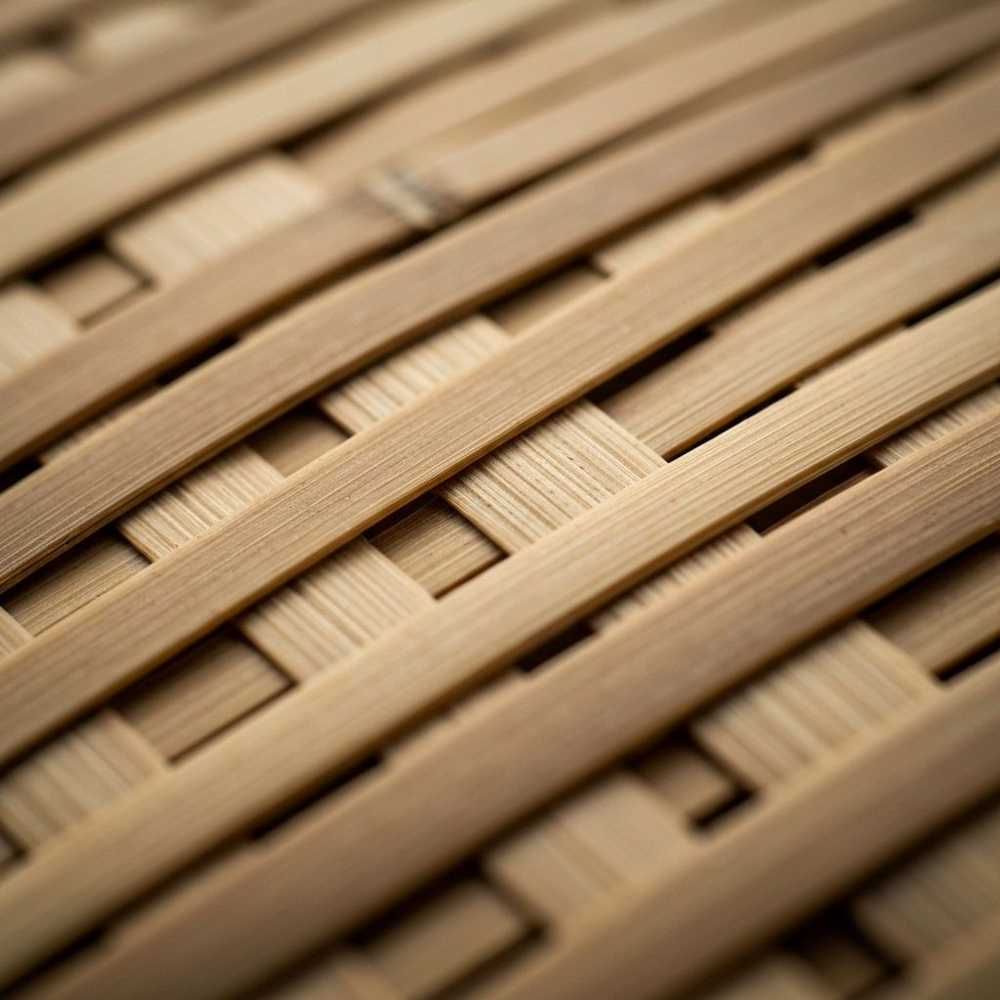
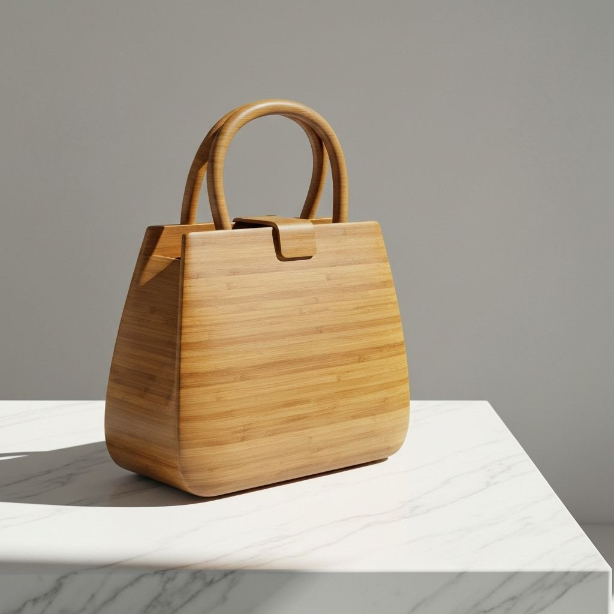

Gallery
Explore our pandan crafts from different angles and settings




Discover the art of traditional pandan weaving from the Philippines. Each handcrafted piece celebrates local artisans, eco-friendly materials, and cultural heritage passed down through generations.
A celebration of Philippine heritage and sustainable artistry
Pandan weaving is a traditional Philippine craft that transforms the leaves of the pandan plant into beautiful, functional art. This ancient technique has been passed down through generations, representing the cultural identity and resourcefulness of Filipino artisans.
Each piece is meticulously handcrafted, requiring skill, patience, and deep knowledge of the material. The natural fragrance and durability of pandan make it an ideal sustainable alternative to synthetic materials.
Made from sustainably harvested pandan leaves with zero synthetic materials.
Each piece supports local Filipino artisans and preserves traditional craftsmanship.
Biodegradable, renewable, and produced with minimal environmental impact.
Did you know?
Pandan leaves have been used in Philippine culture for centuries, not just for weaving but also in traditional cooking and medicine. The natural fragrance of pandan is calming and aromatic, making each handwoven piece a sensory experience.
Watch the step-by-step process of creating a pandan craft
Select fresh pandan leaves and dry them to the perfect moisture level for weaving.
Cut leaves into thin strips and soften them through traditional techniques.
Interlace strips with precision to create the desired shape and pattern.
Add handles, trim edges, and apply natural finishes for durability.
Add handles, trim edges, and apply natural finishes for durability.
Pandan Leaves
Primary material
Natural Twine
For reinforcement
Wood Handles
Sustainable wood
Natural Dyes
Optional coloring
Explore our pandan crafts from different angles and settings
Passionate individuals dedicated to preserving Philippine heritage
Project Lead & Weaver
Cultural Historian
Master Artisan
Sustainability Coordinator
Digital Marketing & Outreach
To celebrate and preserve the traditional art of pandan weaving while supporting local Filipino artisans. We believe in creating sustainable, beautiful products that honor our cultural heritage and inspire appreciation for traditional craftsmanship in a modern world.